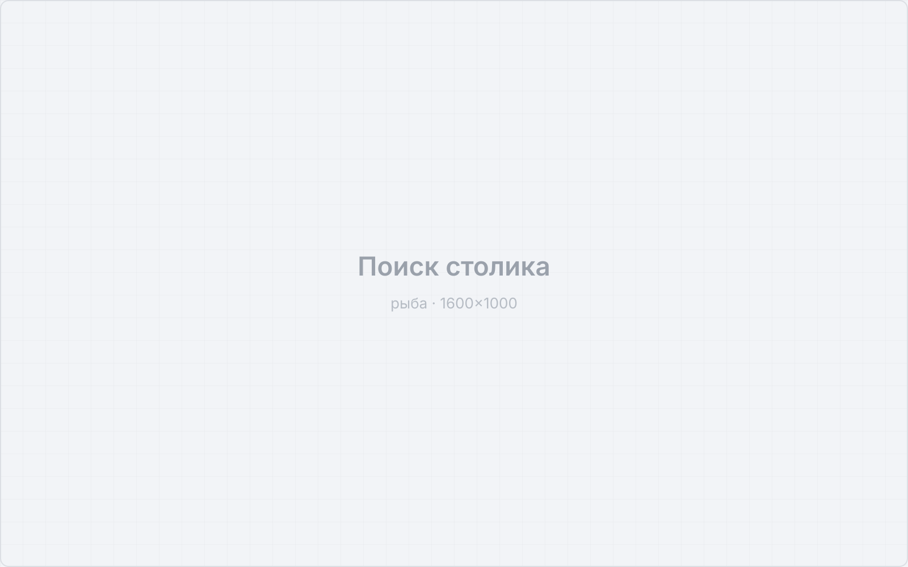
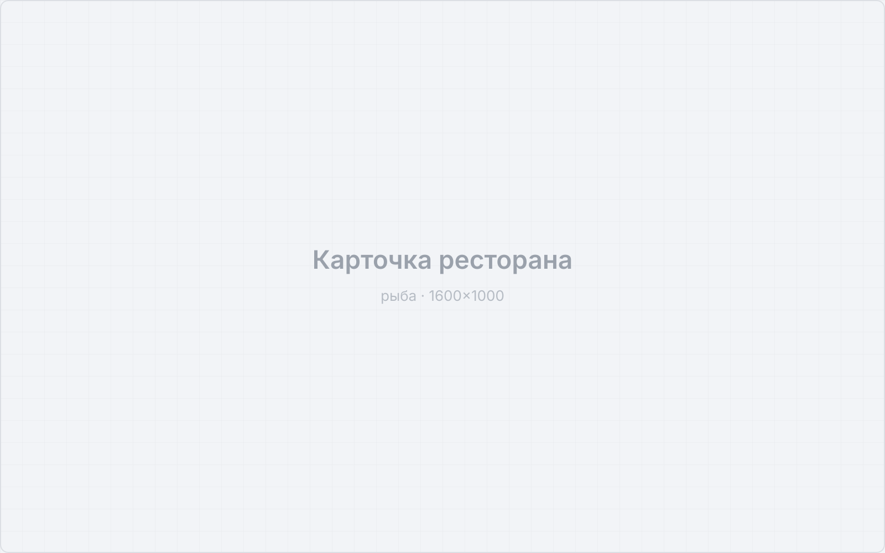
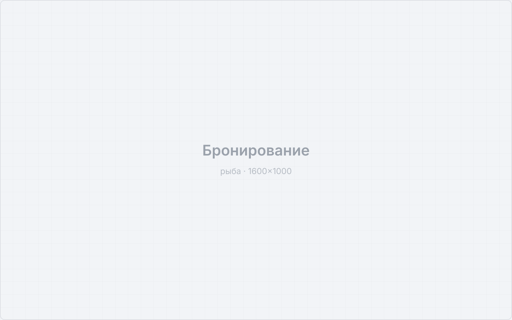
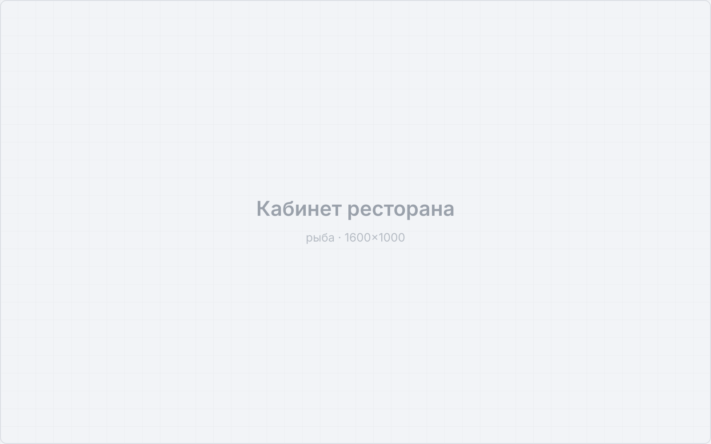

Роль: Product Designer
Discovery • Concept • UX/UI • Бренд • Delivery
Сервис бронирования столов: поиск заведения, выбор времени и стола, подтверждение брони. Вторая сторона продукта — кабинет ресторана.
Заполнить: какую задачу решали для гостя и какую для ресторана; почему существующие способы брони не работали
В двустороннем продукте нельзя оптимизировать одну сторону: гостю нужна мгновенная бронь, ресторану — заполняемость и предсказуемость.
Заполнить: как исследовали: интервью с гостями и рестораторами, разбор процесса брони по телефону
Начинал с того, как бронь работает без продукта — по телефону и в блокноте у хостес.
Заполнить: вывод про ожидания гостя (скорость, подтверждение, отмена)
Заполнить: вывод про ресторан (загрузка зала, no-show, работа хостес)
Заполнить: вывод про доверие к брони без звонка
Заполнить: вывод про то, что стало решающим для сделки с Яндексом
Собрал сценарий, в котором гость получает подтверждение сразу, а ресторан управляет посадкой без ручной сверки. Визуальный язык делал так, чтобы продукт не выглядел справочником — бронь ощущается как обещание.
Заполнить: перечислить ключевые экраны и решения по обеим сторонам продукта




Скриншоты — заглушки, ждут боевых экранов.
Продукт вышел на рынок и был куплен Яндексом.
Заполнить: добавить цифры до сделки: сколько заведений и броней, за какой срок вырос продукт
В двусторонних продуктах выигрывает не тот, кто сделал удобнее гостю, а тот, кто нашел сценарий, где обе стороны получают выгоду в одном действии.